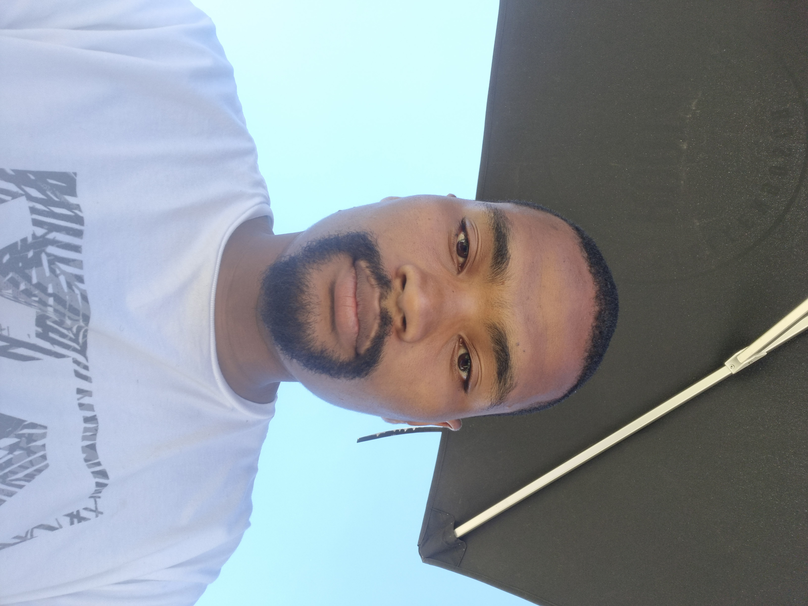

Ashton Oliver

Summary
I am a hardworking and dedicated individual with experience in customer service and administration
Education
- National Senior Certificate - Bernadino Heights High School (2013-2017)
Work Experience
- Customer Service Representative - Musica Clicks Group
January 2018 - January 2019
- Answered customer inquiries via phone and in-person
- Resolved customer complaints and issues
- Maintained customer records and update account information
- Weighbridge Operator - SA Metal(2021-current)
November 2021 - Current
- Weighing all vehicles moving in and out of the site, ensuring waste transfer notes are
received/issued as required
- Taking phone calls from customers and suppliers.
- Assisting in production of outbound paperwork
Skills
- Customer Service: ⭐️⭐️⭐️⭐️⭐️
- Microsoft Office Suite: ⭐️⭐️⭐️
- Organizational skills: ⭐️⭐️⭐️⭐️⭐️
Awards and Certifications
Other